Limites · Taxa média de variação · Definição formal de derivada · Regra da potência · Derivadas sucessivas
Cada tema tem dois exercícios de cada nível: fácil médio difícil. Depois dos exercícios vêm um gabarito rápido e as resoluções comentadas, passo a passo.
| Ideia | Fórmula |
|---|---|
| Taxa média de variação de \(f\) em \([a,b]\) | \(\text{TMV} = \dfrac{f(b)-f(a)}{b-a}\) |
| Definição formal de derivada | \(f'(x) = \displaystyle\lim_{h\to 0}\frac{f(x+h)-f(x)}{h}\) |
| Reta tangente no ponto \(x=a\) | \(y - f(a) = f'(a)\,(x-a)\) |
| Regra da potência (vale para qualquer expoente real \(n\)) | \((x^n)' = n\,x^{n-1}\) |
| Constante, múltiplo e soma | \((c)'=0,\quad (c\,f)'=c\,f',\quad (f\pm g)'=f'\pm g'\) |
| Derivadas sucessivas | \(f''=(f')',\quad f'''=(f'')',\quad f^{(4)}=(f''')',\ \dots\) |
| Produtos notáveis úteis | \(a^2-b^2=(a-b)(a+b),\quad a^3-b^3=(a-b)(a^2+ab+b^2)\) |
Parte I: Exercícios
Tente resolver sozinho antes de olhar o gabarito. Nas figuras, os pontos fechados (●) pertencem ao gráfico e as bolinhas abertas (○) não pertencem.
Calcule \(\displaystyle\lim_{x\to 3}\,(2x^2 - 5x + 1)\).
Observe o gráfico da função \(f\) abaixo e responda:
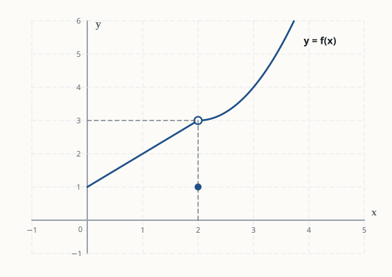
Calcule \(\displaystyle\lim_{x\to 4}\frac{x^2-16}{x-4}\).
Calcule \(\displaystyle\lim_{x\to 0}\frac{\sqrt{x+9}-3}{x}\).
Calcule \(\displaystyle\lim_{x\to 2}\frac{x^3-8}{x^2-5x+6}\).
Considere a função $$f(x)=\begin{cases} k\,x^2-1, & x<2\\[4pt] \dfrac{x^2-4}{x-2}+k, & x>2\end{cases}$$ Determine o valor da constante \(k\) para que \(\displaystyle\lim_{x\to 2}f(x)\) exista e calcule esse limite.
Calcule a taxa média de variação de \(f(x)=x^2\) no intervalo \([1,\,3]\). O que esse número representa na figura?
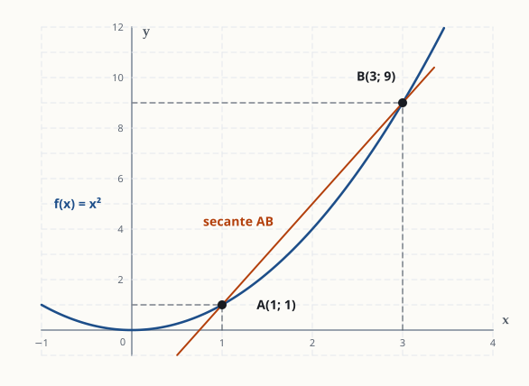
A posição de um carro, em metros, é \(s(t)=5t^2\), com \(t\) em segundos. Qual é a velocidade média do carro entre \(t=2\) s e \(t=4\) s?
Um capital de R$ 1.000,00 é aplicado a uma taxa de 20% ao ano, de duas formas diferentes (\(t\) em anos):
$$\text{juros simples: } S(t)=1000\,(1+0{,}2\,t)\qquad\qquad \text{juros compostos: } C(t)=1000\cdot(1{,}2)^t$$O gráfico mostra \(f(x)=-x^2+6x\) e os pontos A, B e C, com abscissas \(x=1\), \(x=4\) e \(x=6\).
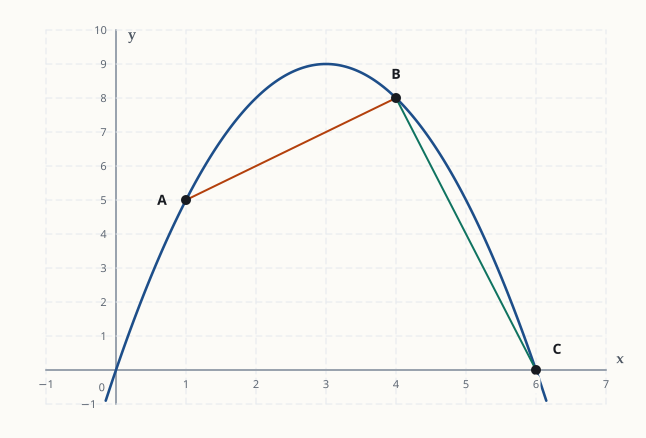
Seja \(f(x)=x^2+1\) e \(P=(2,\,5)\).
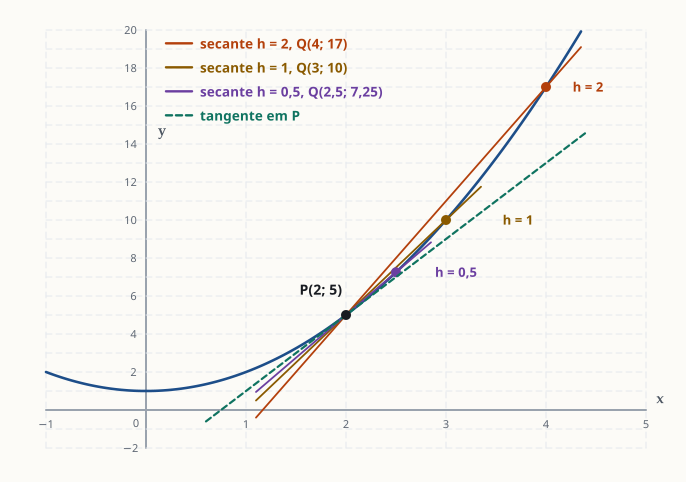
Seja \(f(x)=\sqrt{x}\). Encontre o valor de \(a\), com \(0\le a<9\), para o qual a taxa média de variação de \(f\) no intervalo \([a,\,9]\) é igual a \(\dfrac{1}{5}\).
Em todos os exercícios deste tema, use a definição \(f'(x) = \lim_{h\to 0}\frac{f(x+h)-f(x)}{h}\), e não as regras de derivação.
Use a definição para calcular a derivada de \(f(x)=3x+2\).
Seja \(f(x)=x^2\). Use a definição para calcular \(f'(3)\), a inclinação da reta tangente em \(P(3,9)\). Em seguida, escreva a equação dessa reta tangente.
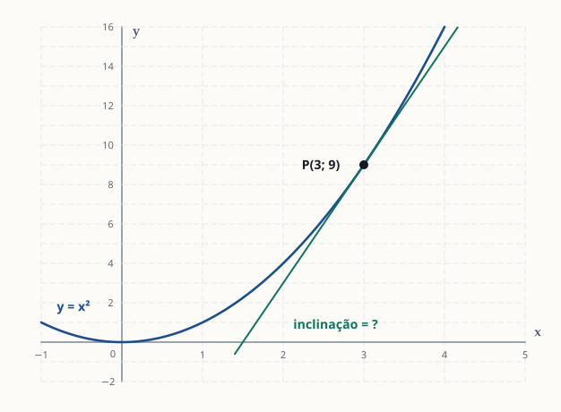
Seja \(f(x)=x^2-4x+1\). Use a definição para encontrar \(f'(x)\) e depois a equação da reta tangente ao gráfico no ponto de abscissa \(x=1\).
Use a definição para calcular a derivada de \(f(x)=\dfrac{1}{x}\) (com \(x\neq 0\)) e depois o valor de \(f'(2)\).
Use a definição para mostrar que, se \(f(x)=\sqrt{x}\), então \(f'(x)=\dfrac{1}{2\sqrt{x}}\) (para \(x>0\)). Depois encontre a reta tangente ao gráfico em \(x=4\).
Seja \(f(x)=x^3\). Use a definição para encontrar \(f'(x)\). Depois determine os pontos do gráfico em que a reta tangente é paralela à reta \(y=12x+1\) e escreva a equação de cada uma dessas tangentes.
Derive:
Derive \(f(x)=3x^4-2x^2+5x-1\) e calcule \(f'(1)\).
Derive, reescrevendo antes como potências de \(x\) quando precisar:
Encontre a equação da reta tangente ao gráfico de \(f(x)=x^3-3x\) no ponto de abscissa \(x=2\).
Encontre todos os pontos do gráfico de \(f(x)=x^3-6x^2+9x+1\) em que a reta tangente é horizontal.
Determine as constantes \(a\) e \(b\) para que a reta \(y=3x-1\) seja tangente ao gráfico de \(f(x)=ax^2+bx\) no ponto de abscissa \(x=1\).
A derivada de uma função também é uma função, então podemos derivá-la de novo: \(f''\) (segunda derivada) é a derivada de \(f'\), e \(f'''\) (terceira derivada) é a derivada de \(f''\). Use a regra da potência em cada etapa.
Seja \(f(x)=x^4-3x^2+2x\). Calcule \(f'(x)\), \(f''(x)\) e \(f'''(x)\).
Seja \(f(x)=5x^3-2x+7\). Calcule \(f''(x)\) e o valor de \(f''(2)\).
Seja \(f(x)=\sqrt{x}+\dfrac{1}{x}\) (com \(x>0\)). Calcule \(f''(x)\) e o valor de \(f''(1)\).
A posição de uma partícula, em metros, é \(s(t)=t^3-6t^2+9t\), com \(t\ge 0\) em segundos. A velocidade é \(v(t)=s'(t)\) e a aceleração é \(a(t)=s''(t)\).
Seja \(f(x)=x^5-5x^4\).
Encontre as constantes \(a\), \(b\), \(c\) e \(d\) do polinômio \(f(x)=ax^3+bx^2+cx+d\) sabendo que $$f(0)=1,\qquad f'(0)=-2,\qquad f''(0)=4,\qquad f'''(0)=12.$$
Gabarito rápido
Só as respostas finais, para conferir. O raciocínio completo está nas resoluções comentadas.
| 1.1 | \(4\) |
| 1.2 | a) \(3\) b) \(3\) c) existe e vale \(3\) d) \(f(2)=1\) |
| 1.3 | \(8\) |
| 1.4 | \(\dfrac{1}{6}\) |
| 1.5 | \(-12\) |
| 1.6 | \(k=\dfrac{5}{3}\) e o limite vale \(\dfrac{17}{3}\) |
| 2.1 | \(4\) (inclinação da secante AB) |
| 2.2 | \(30\ \text{m/s}\) |
| 2.3 | a) \(S\): 1000; 1400; 1800 · \(C\): 1000; 1440; 2073,60 b) \(S\): 200 e 200; \(C\): 220 e 316,80 c) \(S\) cresce em ritmo constante (linear); \(C\) cresce cada vez mais rápido (juros sobre juros) |
| 2.4 | a) \(1\) e \(-4\) b) cresce em média em \([1,4]\) e decresce em média em \([4,6]\) c) \(0\); não, \(f\) sobe e depois desce |
| 2.5 | b) \(6;\ 5;\ 4{,}5\) c) \(4\), a inclinação da tangente em P |
| 2.6 | \(a=4\) |
| 3.1 | \(f'(x)=3\) |
| 3.2 | \(f'(3)=6\); tangente \(y=6x-9\) |
| 3.3 | \(f'(x)=2x-4\); tangente \(y=-2x\) |
| 3.4 | \(f'(x)=-\dfrac{1}{x^2}\); \(f'(2)=-\dfrac14\) |
| 3.5 | tangente \(y=\dfrac{x}{4}+1\) |
| 3.6 | \(f'(x)=3x^2\); pontos \((2,8)\) e \((-2,-8)\); tangentes \(y=12x-16\) e \(y=12x+16\) |
| 4.1 | a) \(5x^4\) b) \(12x^2\) c) \(0\) |
| 4.2 | \(f'(x)=12x^3-4x+5\); \(f'(1)=13\) |
| 4.3 | a) \(\dfrac{1}{2\sqrt x}-\dfrac{2}{x^3}+\dfrac{2}{3\sqrt[3]{x^4}}\) b) \(6x^2+2x-6\) |
| 4.4 | \(y=9x-16\) |
| 4.5 | \((1,5)\) e \((3,1)\) |
| 4.6 | \(a=1,\ b=1\) |
| 5.1 | \(f'=4x^3-6x+2;\ \ f''=12x^2-6;\ \ f'''=24x\) |
| 5.2 | \(f''(x)=30x\); \(f''(2)=60\) |
| 5.3 | \(f''(x)=-\dfrac{1}{4x\sqrt{x}}+\dfrac{2}{x^3}\); \(f''(1)=\dfrac74\) |
| 5.4 | a) \(v=3t^2-12t+9\), \(a=6t-12\) b) \(t=1\) s (\(a=-6\ \text{m/s}^2\)) e \(t=3\) s (\(a=6\ \text{m/s}^2\)) c) \(t=2\) s |
| 5.5 | a) \(5x^4-20x^3;\ 20x^3-60x^2;\ 60x^2-120x\) b) \(x=0\) ou \(x=3\) c) \(n=6\) |
| 5.6 | \(a=2,\ b=2,\ c=-2,\ d=1\), ou seja, \(f(x)=2x^3+2x^2-2x+1\) |
Parte II: Resoluções comentadas
Cada resolução mostra o raciocínio completo: o que fazer, por que fazer e onde é comum errar.
Polinômios são funções "bem comportadas" (contínuas): o limite é simplesmente o valor da função no ponto. Basta substituir \(x=3\):
$$\lim_{x\to3}(2x^2-5x+1) = 2\cdot 3^2 - 5\cdot 3 + 1 = 18 - 15 + 1 = 4.$$ Resposta: 4a) Limite pela esquerda (\(x\to2^-\)): andamos sobre o gráfico vindo de valores menores que 2, pela reta. Ao chegar perto de \(x=2\), a altura chega perto de \(3\) (a bolinha aberta). Logo \(\lim_{x\to2^-}f(x)=3\).
b) Limite pela direita (\(x\to2^+\)): vindo de valores maiores que 2, pela curva, a altura também se aproxima de \(3\). Logo \(\lim_{x\to2^+}f(x)=3\).
c) O limite existe quando os dois limites laterais existem e são iguais. Aqui os dois valem 3, então \(\lim_{x\to2}f(x)=3\).
d) O valor da função é dado pelo ponto fechado em \(x=2\), que está na altura 1: \(f(2)=1\). O limite descreve para onde o gráfico "aponta" perto de 2, e \(f(2)\) é o valor que a função realmente assume em 2. Eles não precisam coincidir. Quando não coincidem, como aqui, dizemos que \(f\) não é contínua em \(x=2\).
a) 3 b) 3 c) sim, vale 3 d) f(2) = 1Substituindo \(x=4\): \(\frac{16-16}{4-4}=\frac{0}{0}\). Isso é uma indeterminação, e não significa que o limite não existe. Significa que o numerador e o denominador têm um fator comum \((x-4)\) escondido.
Fatoramos o numerador pela diferença de quadrados \(a^2-b^2=(a-b)(a+b)\):
$$\frac{x^2-16}{x-4} = \frac{(x-4)(x+4)}{x-4} = x+4 \qquad (x\neq 4).$$Podemos cancelar porque, no limite, \(x\) chega perto de 4 mas nunca é igual a 4, então \(x-4\neq0\). Agora substituímos:
$$\lim_{x\to4}\frac{x^2-16}{x-4}=\lim_{x\to4}(x+4)=8.$$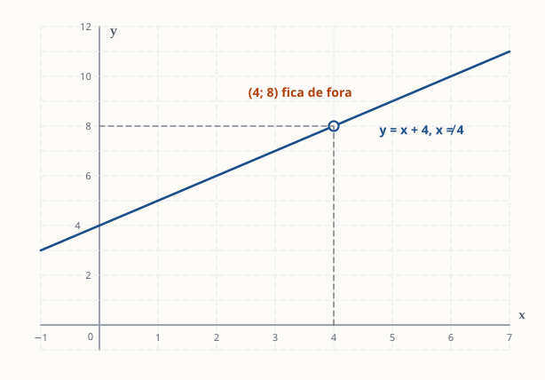
Substituindo \(x=0\): \(\frac{\sqrt9-3}{0}=\frac00\). Com raiz quadrada, o truque é multiplicar em cima e embaixo pelo conjugado \(\sqrt{x+9}+3\), porque \((\sqrt{A}-B)(\sqrt{A}+B)=A-B^2\) faz a raiz sumir do numerador:
$$\frac{\sqrt{x+9}-3}{x}\cdot\frac{\sqrt{x+9}+3}{\sqrt{x+9}+3} = \frac{(x+9)-9}{x\,(\sqrt{x+9}+3)} = \frac{x}{x\,(\sqrt{x+9}+3)} = \frac{1}{\sqrt{x+9}+3}.$$O \(x\) que causava o problema foi cancelado. Agora substituímos \(x=0\):
$$\lim_{x\to0}\frac{1}{\sqrt{x+9}+3}=\frac{1}{3+3}=\frac16.$$Erro comum: multiplicar só o numerador pelo conjugado. É preciso multiplicar em cima e embaixo, senão a fração muda de valor.
Resposta: 1/6Substituindo \(x=2\): numerador \(8-8=0\) e denominador \(4-10+6=0\), ou seja, \(\frac00\). Se os dois zeram em \(x=2\), os dois têm o fator \((x-2)\). Fatoramos cada um:
Numerador, pela diferença de cubos \(a^3-b^3=(a-b)(a^2+ab+b^2)\) com \(a=x\), \(b=2\):
$$x^3-8=(x-2)(x^2+2x+4).$$Denominador: procuramos dois números com soma \(5\) e produto \(6\), que são 2 e 3:
$$x^2-5x+6=(x-2)(x-3).$$Cancelando \((x-2)\) e substituindo:
$$\lim_{x\to2}\frac{(x-2)(x^2+2x+4)}{(x-2)(x-3)}=\lim_{x\to2}\frac{x^2+2x+4}{x-3}=\frac{4+4+4}{2-3}=\frac{12}{-1}=-12.$$Se esquecer a fórmula da diferença de cubos, divida \(x^3-8\) por \(x-2\) (divisão de polinômios ou Briot-Ruffini). O resultado é o mesmo.
Resposta: −12O limite em \(x=2\) existe se, e somente se, os limites laterais forem iguais. Então calculamos cada lado em função de \(k\).
Pela esquerda (\(x<2\), vale a primeira expressão, que é um polinômio, então é só substituir):
$$\lim_{x\to2^-}(kx^2-1)=4k-1.$$Pela direita (\(x>2\)): substituir dá \(\frac00\), então fatoramos como no 1.3:
$$\lim_{x\to2^+}\left(\frac{(x-2)(x+2)}{x-2}+k\right)=\lim_{x\to2^+}(x+2+k)=4+k.$$Igualando os dois lados:
$$4k-1=4+k\;\Longrightarrow\;3k=5\;\Longrightarrow\;k=\frac53.$$O limite vale então \(4+k=4+\frac53=\frac{17}{3}\). Conferindo pelo outro lado: \(4\cdot\frac53-1=\frac{20}{3}-\frac33=\frac{17}{3}\). Os dois lados batem.
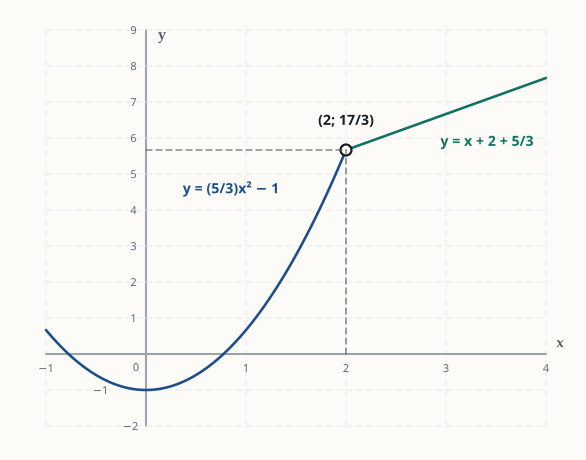
Calculamos \(f\) nas pontas do intervalo: \(f(1)=1^2=1\) e \(f(3)=3^2=9\). Então:
$$\text{TMV}=\frac{f(3)-f(1)}{3-1}=\frac{9-1}{2}=\frac82=4.$$Na figura, esse 4 é a inclinação da secante AB: indo de A até B, a reta sobe 8 unidades enquanto anda 2 para a direita, ou seja, sobe 4 para cada 1 que anda.
Resposta: 4Velocidade média é a TMV da posição:
$$s(2)=5\cdot4=20\ \text{m},\qquad s(4)=5\cdot16=80\ \text{m},$$ $$v_m=\frac{s(4)-s(2)}{4-2}=\frac{80-20}{2}=30\ \text{m/s}.$$O carro percorreu 60 m em 2 s, ou seja, 30 metros por segundo em média.
Resposta: 30 m/sa) Os valores. Para juros simples basta substituir:
$$S(0)=1000\cdot1=1000,\qquad S(2)=1000\cdot(1+0{,}4)=1400,\qquad S(4)=1000\cdot(1+0{,}8)=1800.$$Para juros compostos, calcule as potências de 1,2 com calma. Um atalho: \((1{,}2)^4=\big((1{,}2)^2\big)^2\).
$$(1{,}2)^2=1{,}44,\qquad (1{,}2)^4=1{,}44^2=2{,}0736,$$ $$C(0)=1000,\qquad C(2)=1000\cdot1{,}44=1440,\qquad C(4)=1000\cdot2{,}0736=2073{,}60.$$b) As TMVs. Em cada intervalo, aplicamos \(\dfrac{\text{valor final}-\text{valor inicial}}{\text{tempo}}\). As duas contas usam 2 anos no denominador.
Juros simples:
$$\text{TMV}_{[0,2]}=\frac{1400-1000}{2}=200,\qquad \text{TMV}_{[2,4]}=\frac{1800-1400}{2}=200.$$Juros compostos:
$$\text{TMV}_{[0,2]}=\frac{1440-1000}{2}=220,\qquad \text{TMV}_{[2,4]}=\frac{2073{,}60-1440}{2}=\frac{633{,}60}{2}=316{,}80.$$As unidades são reais por ano: a TMV diz quanto dinheiro a aplicação ganhou, em média, a cada ano do intervalo.
c) O que as TMVs revelam.
Juros simples: a TMV é a mesma nos dois intervalos (R$ 200 por ano). Uma função que tem a mesma TMV em qualquer intervalo é uma reta, ou seja, cresce sempre no mesmo ritmo. Isso bate com a fórmula: \(S(t)=1000+200t\) é uma função do 1º grau, e 200 é a inclinação dela.
Por quê: no regime simples, os juros são calculados sempre sobre o capital inicial. Todo ano rende 20% de R$ 1.000, que são R$ 200, nem mais nem menos.
Juros compostos: a TMV aumentou de 220 para 316,80. O dinheiro não só cresce, como cresce cada vez mais rápido. Por isso o gráfico de \(C\) não é uma reta: é uma curva que vai ficando mais inclinada.
Por quê: no regime composto, os juros de cada ano são calculados sobre o montante acumulado, que já inclui os juros anteriores ("juros sobre juros"). No 1º ano rende 20% de 1000 = 200. No 2º ano rende 20% de 1200 = 240. No 3º rende 20% de 1440 = 288, e assim por diante. A cada ano a base é maior, então o ganho também é maior.
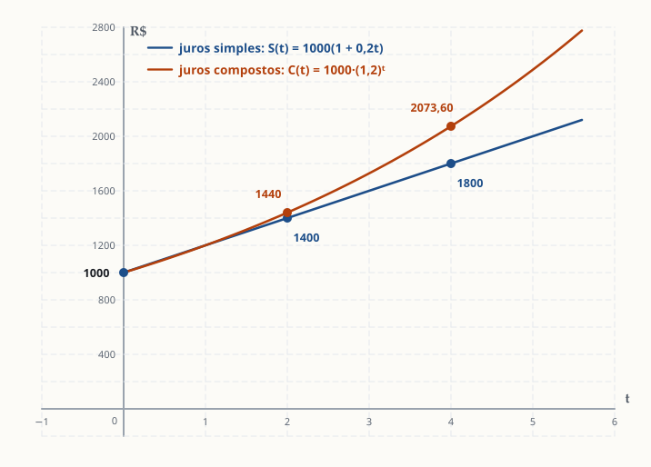
A ideia que vale para qualquer função: se a TMV muda de um intervalo para outro, a função não é linear. Se a TMV aumenta, ela está acelerando o crescimento. Se diminui, está desacelerando. Comparar TMVs em intervalos vizinhos é um jeito simples de "enxergar" o formato do gráfico sem desenhá-lo.
S: TMV 200 e 200 (ritmo constante) · C: TMV 220 e 316,80 (crescimento acelerado)Valores da função: \(f(0)=0\), \(f(1)=-1+6=5\), \(f(4)=-16+24=8\) e \(f(6)=-36+36=0\).
a)
$$\text{TMV}_{[1,4]}=\frac{8-5}{4-1}=\frac33=1,\qquad \text{TMV}_{[4,6]}=\frac{0-8}{6-4}=\frac{-8}{2}=-4.$$b) TMV positiva quer dizer que, em média, \(f\) aumentou no intervalo: a secante AB sobe. TMV negativa quer dizer que \(f\) diminuiu em média: a secante BC desce, e bem mais inclinada, porque \(|-4|>1\).
c) \(\text{TMV}_{[0,6]}=\dfrac{f(6)-f(0)}{6-0}=\dfrac{0-0}{6}=0\). Isso não quer dizer que \(f\) ficou constante. A função subiu até 9 (em \(x=3\)) e depois desceu de volta a 0. A TMV só compara o começo com o fim e não enxerga o que aconteceu no meio. É por isso que precisamos de uma taxa "instantânea", a derivada.
a) 1 e −4 b) sobe em média / desce em média c) 0, mas f não é constantea) Aplicamos a fórmula com \(a=2\) e \(b=2+h\), de modo que \(b-a=h\):
$$f(2+h)=(2+h)^2+1=4+4h+h^2+1=5+4h+h^2,\qquad f(2)=5.$$ $$\text{TMV}=\frac{f(2+h)-f(2)}{h}=\frac{(5+4h+h^2)-5}{h}=\frac{4h+h^2}{h}=\frac{h(4+h)}{h}=4+h.$$b) Basta substituir \(h\) em \(4+h\): para \(h=2\) dá \(6\), para \(h=1\) dá \(5\) e para \(h=0{,}5\) dá \(4{,}5\). Conferindo o caso \(h=2\) direto: \(\frac{f(4)-f(2)}{2}=\frac{17-5}{2}=6\).
c) Quando \(h\to0\), \(4+h\to4\). Na figura, à medida que \(h\) diminui, o segundo ponto Q escorrega pela curva em direção a P, e a secante gira até coincidir com a reta tangente em P. O número 4 é a inclinação da tangente, ou seja, a derivada \(f'(2)\). Essa é exatamente a ponte entre a taxa média e a definição de derivada do tema 3.
a) 4 + h b) 6; 5; 4,5 c) 4 = f′(2)Montamos a TMV com \(f(9)=\sqrt9=3\) e \(f(a)=\sqrt a\):
$$\frac{3-\sqrt a}{9-a}=\frac15.$$O truque é perceber que \(9-a\) é uma diferença de quadrados: \(9-a=3^2-(\sqrt a)^2=(3-\sqrt a)(3+\sqrt a)\). Então:
$$\frac{3-\sqrt a}{(3-\sqrt a)(3+\sqrt a)}=\frac{1}{3+\sqrt a}=\frac15.$$Comparando os denominadores: \(3+\sqrt a=5\), então \(\sqrt a=2\) e \(a=4\).
Conferindo: \(\dfrac{\sqrt9-\sqrt4}{9-4}=\dfrac{3-2}{5}=\dfrac15\). Correto.
Também dá para resolver fazendo "meios pelos extremos": \(5(3-\sqrt a)=9-a\). A fatoração é mais rápida e evita equação com raiz.
Resposta: a = 4\(f(x+h)=3(x+h)+2=3x+3h+2\). Então:
$$\frac{f(x+h)-f(x)}{h}=\frac{(3x+3h+2)-(3x+2)}{h}=\frac{3h}{h}=3.$$ $$f'(x)=\lim_{h\to0}3=3.$$Faz sentido: o gráfico de \(3x+2\) é uma reta de inclinação 3, e uma reta tem a mesma inclinação em todo ponto.
f′(x) = 3Aplicamos a definição direto no ponto \(x=3\):
$$f'(3)=\lim_{h\to0}\frac{(3+h)^2-3^2}{h}=\lim_{h\to0}\frac{9+6h+h^2-9}{h}=\lim_{h\to0}\frac{h(6+h)}{h}=\lim_{h\to0}(6+h)=6.$$A tangente passa por \(P(3,9)\) com inclinação 6:
$$y-9=6(x-3)\;\Longrightarrow\;y=6x-9.$$Conferindo: em \(x=3\), \(6\cdot3-9=9\). A reta passa por P.
f′(3) = 6; tangente y = 6x − 9Troque todo \(x\) por \((x+h)\):
$$f(x+h)=(x+h)^2-4(x+h)+1=x^2+2xh+h^2-4x-4h+1.$$Subtraia \(f(x)=x^2-4x+1\). Os termos \(x^2\), \(-4x\) e \(1\) se cancelam:
$$f(x+h)-f(x)=2xh+h^2-4h=h\,(2x+h-4).$$ $$f'(x)=\lim_{h\to0}\frac{h(2x+h-4)}{h}=\lim_{h\to0}(2x+h-4)=2x-4.$$Tangente em \(x=1\): o ponto é \(f(1)=1-4+1=-2\) e a inclinação é \(f'(1)=2-4=-2\).
$$y-(-2)=-2(x-1)\;\Longrightarrow\;y+2=-2x+2\;\Longrightarrow\;y=-2x.$$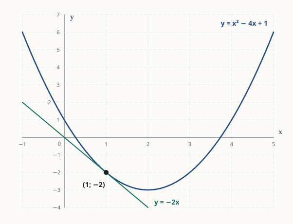
Aqui aparece uma fração dentro da fração. O passo principal é juntar as frações do numerador com o denominador comum \(x(x+h)\):
$$f(x+h)-f(x)=\frac1{x+h}-\frac1x=\frac{x-(x+h)}{x(x+h)}=\frac{-h}{x(x+h)}.$$Dividindo por \(h\) (o mesmo que multiplicar por \(\frac1h\)):
$$\frac{f(x+h)-f(x)}{h}=\frac{-h}{x(x+h)}\cdot\frac1h=\frac{-1}{x(x+h)}.$$ $$f'(x)=\lim_{h\to0}\frac{-1}{x(x+h)}=\frac{-1}{x\cdot x}=-\frac{1}{x^2}.$$Então \(f'(2)=-\frac{1}{4}\). O sinal negativo faz sentido: \(\frac1x\) diminui quando \(x\) aumenta (para \(x>0\)).
f′(x) = −1/x²; f′(2) = −1/4Montando a definição, caímos em \(\frac00\) com raízes. É o mesmo truque do exercício 1.4: multiplicar pelo conjugado.
$$\frac{\sqrt{x+h}-\sqrt x}{h}\cdot\frac{\sqrt{x+h}+\sqrt x}{\sqrt{x+h}+\sqrt x}=\frac{(x+h)-x}{h\,(\sqrt{x+h}+\sqrt x)}=\frac{h}{h\,(\sqrt{x+h}+\sqrt x)}=\frac{1}{\sqrt{x+h}+\sqrt x}.$$ $$f'(x)=\lim_{h\to0}\frac{1}{\sqrt{x+h}+\sqrt x}=\frac{1}{\sqrt x+\sqrt x}=\frac{1}{2\sqrt x}.$$Tangente em \(x=4\): ponto \(f(4)=\sqrt4=2\), inclinação \(f'(4)=\frac{1}{2\cdot2}=\frac14\).
$$y-2=\tfrac14(x-4)\;\Longrightarrow\;y=\tfrac{x}{4}+1.$$Repare: \(\frac{1}{2\sqrt x}=\frac12x^{-1/2}\), exatamente o que a regra da potência dá para \(x^{1/2}\). A definição "prova" a regra nesse caso.
f′(x) = 1/(2√x); tangente y = x/4 + 1Primeiro expandimos \((x+h)^3\). Uma forma segura é \((x+h)^3=(x+h)^2(x+h)=(x^2+2xh+h^2)(x+h)\):
$$(x+h)^3=x^3+3x^2h+3xh^2+h^3.$$ $$\frac{f(x+h)-f(x)}{h}=\frac{3x^2h+3xh^2+h^3}{h}=3x^2+3xh+h^2\;\xrightarrow{\;h\to0\;}\;3x^2.$$Logo \(f'(x)=3x^2\).
Tangentes paralelas a \(y=12x+1\): retas paralelas têm a mesma inclinação, então queremos \(f'(x)=12\):
$$3x^2=12\;\Longrightarrow\;x^2=4\;\Longrightarrow\;x=2\ \text{ou}\ x=-2.$$Pontos: \(f(2)=8\), dando \((2,8)\), e \(f(-2)=-8\), dando \((-2,-8)\). As tangentes:
$$y-8=12(x-2)\Rightarrow y=12x-16,\qquad y+8=12(x+2)\Rightarrow y=12x+16.$$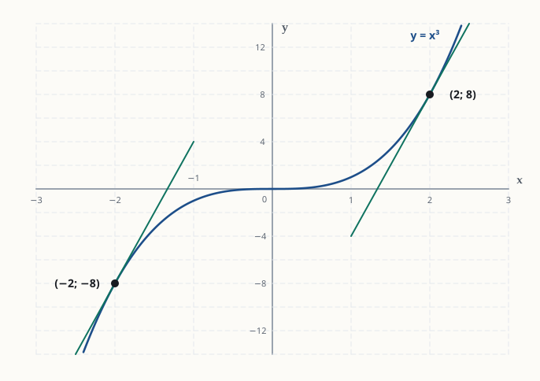
Erro comum: esquecer a solução negativa de \(x^2=4\).
f′(x) = 3x²; pontos (2, 8) e (−2, −8); y = 12x − 16 e y = 12x + 16a) \(n=5\): \((x^5)'=5x^{5-1}=5x^4\).
b) A constante 4 multiplicando fica: \((4x^3)'=4\cdot3x^2=12x^2\).
c) A derivada de uma constante é zero: o gráfico de \(h(x)=7\) é uma reta horizontal, de inclinação 0.
a) 5x⁴ b) 12x² c) 0Derivamos termo a termo:
$$f'(x)=3\cdot4x^3-2\cdot2x+5\cdot1-0=12x^3-4x+5.$$Lembre que \((5x)'=5\), porque \(x=x^1\) e \((x^1)'=1\cdot x^0=1\). E o \(-1\) é uma constante, com derivada 0.
$$f'(1)=12-4+5=13.$$ f′(x) = 12x³ − 4x + 5; f′(1) = 13a) A regra da potência só funciona quando cada termo está no formato \(c\,x^n\) (um número vezes \(x\) elevado a um expoente). Raízes e frações com \(x\) no denominador não estão nesse formato. Então o primeiro trabalho é só de álgebra: reescrever.
| Termo original | Por quê | Como potência |
|---|---|---|
| \(\sqrt{x}\) | raiz quadrada = expoente \(\tfrac12\) | \(x^{1/2}\) |
| \(\dfrac{1}{x^2}\) | passar do denominador para o numerador troca o sinal do expoente | \(x^{-2}\) |
| \(\dfrac{2}{\sqrt[3]{x}}\) | \(\sqrt[3]{x}=x^{1/3}\) e ela está no denominador, então o expoente fica negativo | \(2x^{-1/3}\) |
Portanto:
$$f(x)=x^{1/2}+x^{-2}-2x^{-1/3}.$$Agora derivamos termo a termo. Em cada um, o expoente \(n\) desce multiplicando e o novo expoente é \(n-1\). A conta \(n-1\) com frações é onde mais se erra, então vamos fazer com calma.
1º termo, \(x^{1/2}\): aqui \(n=\tfrac12\), e \(n-1=\tfrac12-\tfrac22=-\tfrac12\).
$$\left(x^{1/2}\right)'=\tfrac12\,x^{-1/2}.$$2º termo, \(x^{-2}\): aqui \(n=-2\), e \(n-1=-2-1=-3\). O \(-2\) desce multiplicando:
$$\left(x^{-2}\right)'=-2\,x^{-3}.$$3º termo, \(-2x^{-1/3}\): o \(-2\) é uma constante multiplicando, então ele fica. Aqui \(n=-\tfrac13\), e \(n-1=-\tfrac13-\tfrac33=-\tfrac43\). O expoente \(-\tfrac13\) desce e multiplica o \(-2\): \((-2)\cdot\left(-\tfrac13\right)=+\tfrac23\) (menos com menos dá mais).
$$\left(-2x^{-1/3}\right)'=-2\cdot\left(-\tfrac13\right)x^{-4/3}=\tfrac23\,x^{-4/3}.$$Juntando os três:
$$f'(x)=\tfrac12x^{-1/2}-2x^{-3}+\tfrac23x^{-4/3}.$$Essa já é uma resposta correta. Se quiser voltar para a forma com raízes, desfaça a reescrita: expoente negativo volta para o denominador, e expoente fracionário vira raiz (\(x^{4/3}=\sqrt[3]{x^4}\)):
$$f'(x)=\frac{1}{2\sqrt x}-\frac{2}{x^3}+\frac{2}{3\sqrt[3]{x^4}}.$$Erro comum: calcular \(-\tfrac13-1\) como \(-\tfrac23\). Subtrair 1 de um número negativo deixa ele mais negativo: \(-\tfrac13-1=-\tfrac43\).
b) Aqui temos um produto de dois parênteses, e a regra da potência não se aplica direto a um produto. Um erro muito comum é derivar cada parêntese e multiplicar: \((2)\cdot(2x)=4x\). Isso está errado, porque a derivada de um produto não é o produto das derivadas.
Com o que temos até aqui, a saída é expandir (fazer a distributiva) e transformar o produto numa soma de potências. Cada termo do primeiro parêntese multiplica cada termo do segundo:
$$2x\cdot x^2=2x^3,\qquad 2x\cdot(-3)=-6x,\qquad 1\cdot x^2=x^2,\qquad 1\cdot(-3)=-3.$$Somando e ordenando pelo grau:
$$g(x)=2x^3+x^2-6x-3.$$Agora sim, derivamos termo a termo: \((2x^3)'=6x^2\), \((x^2)'=2x\), \((-6x)'=-6\) e \((-3)'=0\).
$$g'(x)=6x^2+2x-6.$$Para ver que o "atalho errado" falha, basta testar um valor: em \(x=1\) a resposta certa dá \(g'(1)=6+2-6=2\), e o atalho errado dá \(4\cdot1=4\). Os valores são diferentes, então o atalho não vale.
a) 1/(2√x) − 2/x³ + 2/(3∛x⁴) b) 6x² + 2x − 6A reta tangente é a reta que "encosta" no gráfico num ponto, com a mesma inclinação que o gráfico tem ali. Para escrever a equação de qualquer reta precisamos de duas coisas: um ponto por onde ela passa e a inclinação dela. Depois usamos a forma ponto-inclinação \(y-y_0=m\,(x-x_0)\).
1. O ponto. A reta toca o gráfico em \(x=2\), então o ponto é \((2,\,f(2))\):
$$f(2)=2^3-3\cdot2=8-6=2\quad\Longrightarrow\quad (x_0,y_0)=(2,\,2).$$2. A derivada. Termo a termo: \((x^3)'=3x^2\) e \((-3x)'=-3\).
$$f'(x)=3x^2-3.$$3. A inclinação. A inclinação da tangente em \(x=2\) é a derivada calculada em 2:
$$m=f'(2)=3\cdot2^2-3=3\cdot4-3=12-3=9.$$4. A equação. Substituímos na forma ponto-inclinação e isolamos \(y\):
$$y-2=9(x-2)\;\Longrightarrow\;y-2=9x-18\;\Longrightarrow\;y=9x-16.$$5. Conferência. Em \(x=2\) a reta dá \(9\cdot2-16=2\), que é o valor de \(f(2)\). A reta passa mesmo pelo ponto de tangência.
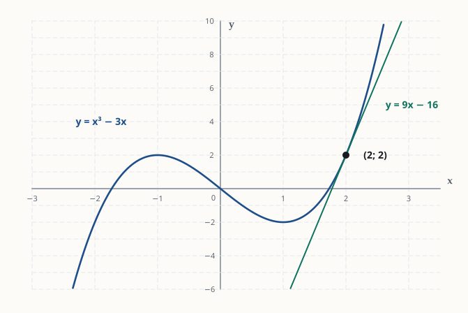
Dois erros comuns: usar \(f'(2)=9\) como se fosse a altura do ponto (a altura é \(f(2)=2\)); ou deixar \(f'(x)\) com \(x\) na equação da reta. A inclinação de uma reta é um número, então é preciso calcular \(f'\) no ponto.
y = 9x − 16Traduzindo a pergunta. Uma reta horizontal tem inclinação zero. A inclinação da tangente é a derivada. Então "tangente horizontal" quer dizer \(f'(x)=0\). O problema virou: derivar e resolver uma equação.
1. Derivar termo a termo: \((x^3)'=3x^2\), \((-6x^2)'=-12x\), \((9x)'=9\) e \((1)'=0\).
$$f'(x)=3x^2-12x+9.$$2. Resolver \(f'(x)=0\). Primeiro dividimos tudo por 3 para simplificar (dividir os dois lados de uma equação \(=0\) por 3 não muda as soluções):
$$3x^2-12x+9=0\;\Longrightarrow\;x^2-4x+3=0.$$Procuramos dois números com soma 4 e produto 3: são 1 e 3. Então:
$$(x-1)(x-3)=0\;\Longrightarrow\;x=1\ \text{ou}\ x=3.$$(Por Bhaskara dá o mesmo: \(\Delta=16-12=4\) e \(x=\frac{4\pm2}{2}\), ou seja, \(x=3\) ou \(x=1\).)
3. Achar as alturas. A pergunta pede pontos do gráfico, então calculamos \(f\) (a função original, não a derivada) em cada \(x\):
$$f(1)=1^3-6\cdot1^2+9\cdot1+1=1-6+9+1=5,$$ $$f(3)=3^3-6\cdot3^2+9\cdot3+1=27-54+27+1=1.$$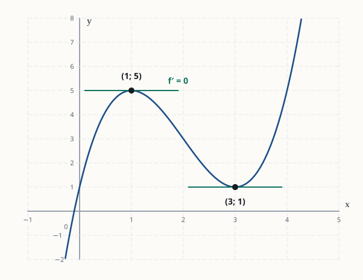
O que esses pontos significam. Em \((1,5)\) o gráfico para de subir e começa a descer, como o topo de uma colina. Em \((3,1)\) ele para de descer e começa a subir, como o fundo de um vale. Nos dois casos, bem no ponto de virada, a curva fica "achatada" e a tangente é horizontal.
Erros comuns: responder só \(x=1\) e \(x=3\), sem as alturas; ou calcular a altura usando \(f'\) no lugar de \(f\). Nesse caso daria sempre 0, porque foi assim que achamos esses \(x\).
(1, 5) e (3, 1)Quantas equações precisamos? Há duas incógnitas, \(a\) e \(b\), então precisamos de duas equações. A frase "a reta é tangente ao gráfico em \(x=1\)" fornece exatamente duas informações:
Equação (i), mesmo ponto. A altura da reta em \(x=1\) é \(y=3\cdot1-1=2\). A altura da curva em \(x=1\) é \(f(1)=a\cdot1^2+b\cdot1=a+b\). Igualando:
$$a+b=2.$$Equação (ii), mesma inclinação. A inclinação da reta \(y=3x-1\) é o número que multiplica \(x\), ou seja, 3. A inclinação da curva é a derivada. Atenção: \(a\) e \(b\) são números (constantes), então derivamos só o \(x\):
$$(ax^2)'=a\cdot2x=2ax,\qquad (bx)'=b\qquad\Longrightarrow\qquad f'(x)=2ax+b.$$Em \(x=1\): \(f'(1)=2a+b\). Igualando à inclinação da reta:
$$2a+b=3.$$Resolvendo o sistema. Subtraímos a equação (i) da (ii). O \(b\) some:
$$(2a+b)-(a+b)=3-2\;\Longrightarrow\;a=1.$$Substituindo \(a=1\) em (i): \(1+b=2\), então \(b=1\). A função é \(f(x)=x^2+x\).
Conferência das duas condições: \(f(1)=1+1=2\) (mesmo ponto da reta) e \(f'(x)=2x+1\), então \(f'(1)=3\) (mesma inclinação da reta). As duas batem.
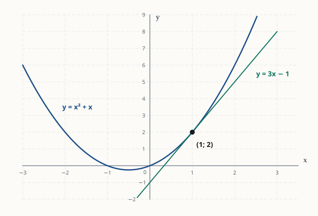
Erro comum: usar só uma das condições. Com uma equação e duas incógnitas existem infinitas respostas. É a tangência (ponto e inclinação) que fixa \(a\) e \(b\).
a = 1 e b = 1Primeira derivada (regra da potência termo a termo): \((x^4)'=4x^3\), \((-3x^2)'=-6x\) e \((2x)'=2\).
$$f'(x)=4x^3-6x+2.$$Segunda derivada: agora derivamos \(f'\), não \(f\). \((4x^3)'=12x^2\), \((-6x)'=-6\) e \((2)'=0\).
$$f''(x)=12x^2-6.$$Terceira derivada: derivamos \(f''\). \((12x^2)'=24x\) e \((-6)'=0\).
$$f'''(x)=24x.$$Repare que o grau cai 1 a cada derivada (4, 3, 2, 1) e que as constantes vão sumindo: o \(+2\) de \(f'\) virou 0 em \(f''\).
f′ = 4x³ − 6x + 2; f″ = 12x² − 6; f‴ = 24xPara chegar à segunda derivada, precisamos passar pela primeira:
$$f'(x)=15x^2-2\qquad(\text{o }7\text{ é constante e some}),$$ $$f''(x)=30x\qquad(\text{o }-2\text{ é constante e some}).$$Só no final substituímos o número: \(f''(2)=30\cdot2=60\).
Erro comum: substituir \(x=2\) cedo demais, em \(f'\), e depois derivar o número. \(f'(2)=58\) é uma constante, e a derivada de uma constante é 0. Primeiro derive tudo, depois substitua.
f″(x) = 30x; f″(2) = 60Como no 4.3, reescrevemos como potências: \(\sqrt x=x^{1/2}\) e \(\frac1x=x^{-1}\).
$$f(x)=x^{1/2}+x^{-1}.$$Primeira derivada. Expoentes: \(\tfrac12-1=-\tfrac12\) e \(-1-1=-2\).
$$f'(x)=\tfrac12x^{-1/2}-x^{-2}.$$Segunda derivada. Derivamos cada termo de \(f'\) com o mesmo cuidado.
1º termo: o \(\tfrac12\) fica, o expoente \(-\tfrac12\) desce e o novo expoente é \(-\tfrac12-1=-\tfrac32\). Então \(\tfrac12\cdot\left(-\tfrac12\right)x^{-3/2}=-\tfrac14x^{-3/2}\).
2º termo: o \(-1\) fica, o expoente \(-2\) desce e o novo expoente é \(-3\). Então \(-1\cdot(-2)x^{-3}=+2x^{-3}\).
$$f''(x)=-\tfrac14x^{-3/2}+2x^{-3}=-\frac{1}{4x\sqrt x}+\frac{2}{x^3}.$$(Usamos \(x^{3/2}=x^1\cdot x^{1/2}=x\sqrt x\).)
Valor em \(x=1\). Como \(1\) elevado a qualquer expoente é \(1\):
$$f''(1)=-\tfrac14+2=\tfrac74.$$ f″(x) = −1/(4x√x) + 2/x³; f″(1) = 7/4a) A velocidade é a primeira derivada da posição, e a aceleração é a segunda (ou seja, a derivada da velocidade):
$$v(t)=s'(t)=3t^2-12t+9,\qquad a(t)=v'(t)=s''(t)=6t-12.$$b) "Parada" significa velocidade zero:
$$3t^2-12t+9=0\;\Longrightarrow\;t^2-4t+3=0\;\Longrightarrow\;(t-1)(t-3)=0\;\Longrightarrow\;t=1\ \text{s ou}\ t=3\ \text{s}.$$A aceleração nesses instantes:
$$a(1)=6-12=-6\ \text{m/s}^2,\qquad a(3)=18-12=6\ \text{m/s}^2.$$Interpretação: em \(t=1\) a partícula para com aceleração negativa, então ela passa a andar para trás. Em \(t=3\) para com aceleração positiva, então volta a andar para frente. Parar (\(v=0\)) não significa aceleração zero.
c) \(a(t)=6t-12=0\) quando \(t=2\) s. É o instante em que a velocidade para de diminuir e começa a aumentar (o ponto mais baixo da curva de \(v\)).
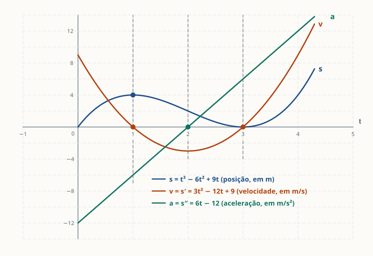
a) Uma derivada de cada vez, sempre a partir da anterior:
$$f'(x)=5x^4-20x^3,$$ $$f''(x)=20x^3-60x^2,$$ $$f'''(x)=60x^2-120x.$$b) Para resolver \(20x^3-60x^2=0\), colocamos em evidência o que os dois termos têm em comum, que é \(20x^2\):
$$20x^2(x-3)=0.$$Um produto é zero quando algum fator é zero: \(20x^2=0\) dá \(x=0\), e \(x-3=0\) dá \(x=3\).
Erro comum: dividir a equação por \(x^2\) e perder a solução \(x=0\). Colocar em evidência não perde nenhuma solução.
c) Continuamos derivando:
$$f^{(4)}(x)=120x-120,\qquad f^{(5)}(x)=120,\qquad f^{(6)}(x)=0.$$Então \(n=6\). O motivo: cada derivada diminui o grau do polinômio em 1. \(f\) tem grau 5, e depois de 5 derivadas sobra uma constante (grau 0). A sexta derivada de uma constante é zero, e daí em diante tudo continua zero. De modo geral, um polinômio de grau \(n\) tem a derivada de ordem \(n+1\) igual a zero.
a) 5x⁴ − 20x³; 20x³ − 60x²; 60x² − 120x b) x = 0 ou x = 3 c) n = 6A estratégia é calcular \(f, f', f'', f'''\) de forma geral e depois substituir \(x=0\). O zero apaga quase todos os termos, e cada condição acaba revelando uma constante.
Lembre que \(a, b, c, d\) são números, então derivamos só o \(x\):
$$f(x)=ax^3+bx^2+cx+d,$$ $$f'(x)=3ax^2+2bx+c,$$ $$f''(x)=6ax+2b,$$ $$f'''(x)=6a.$$Agora usamos as condições, uma por linha:
$$f(0)=d=1\;\Longrightarrow\;d=1,$$ $$f'(0)=c=-2\;\Longrightarrow\;c=-2,$$ $$f''(0)=2b=4\;\Longrightarrow\;b=2,$$ $$f'''(0)=6a=12\;\Longrightarrow\;a=2.$$Logo \(f(x)=2x^3+2x^2-2x+1\).
Conferência: \(f'(x)=6x^2+4x-2\), \(f''(x)=12x+4\) e \(f'''(x)=12\). Em \(x=0\): \(f(0)=1\), \(f'(0)=-2\), \(f''(0)=4\) e \(f'''(0)=12\). Todas as condições batem.
Repare no padrão: em \(x=0\), a derivada de ordem \(k\) "enxerga" só o termo \(x^k\). É por isso que cada condição isolou uma constante diferente.
a = 2, b = 2, c = −2, d = 1